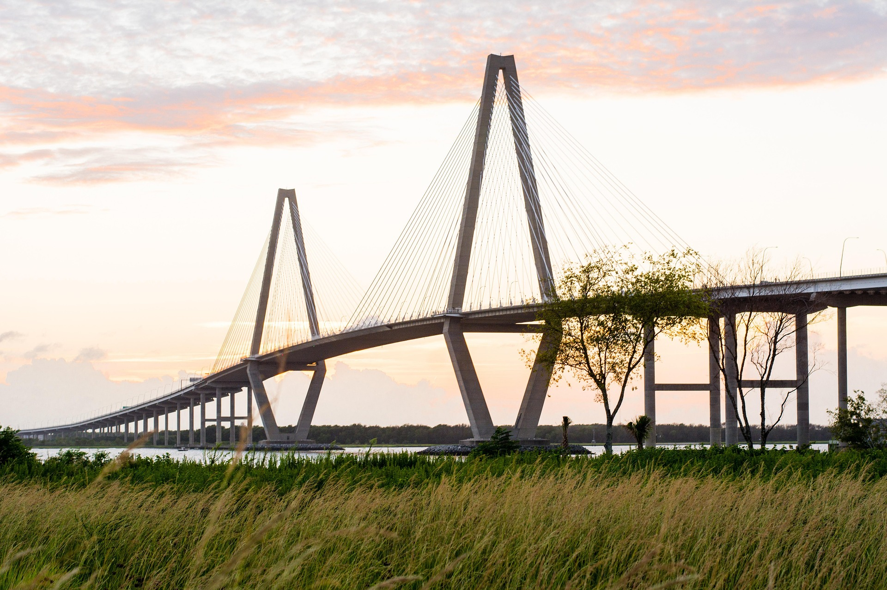
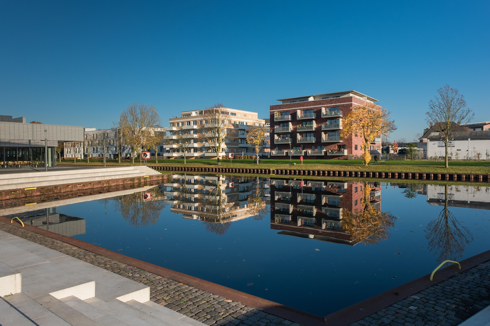
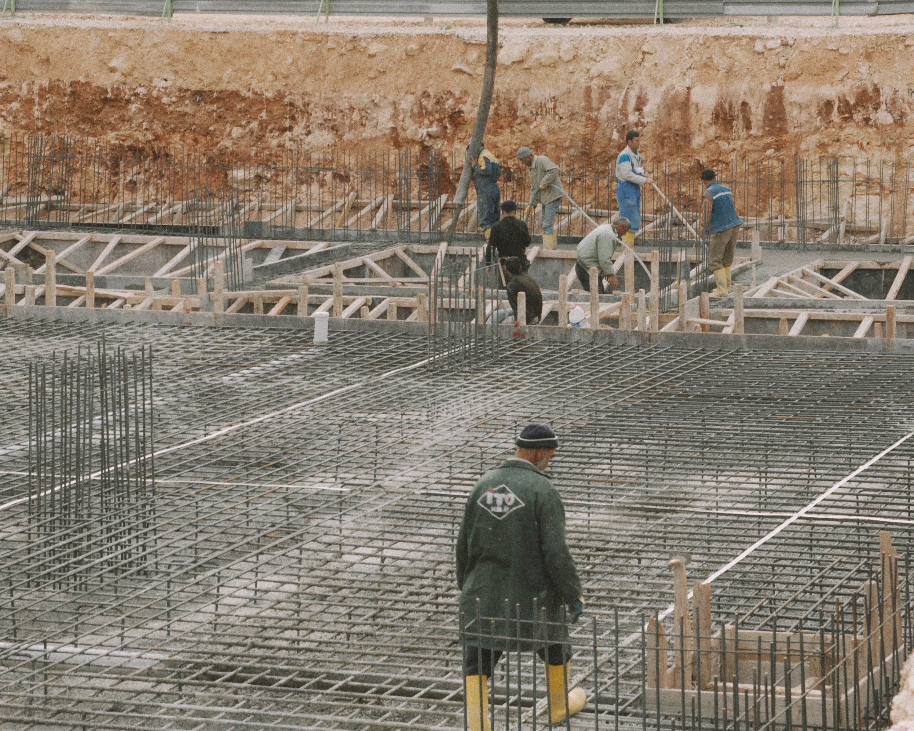
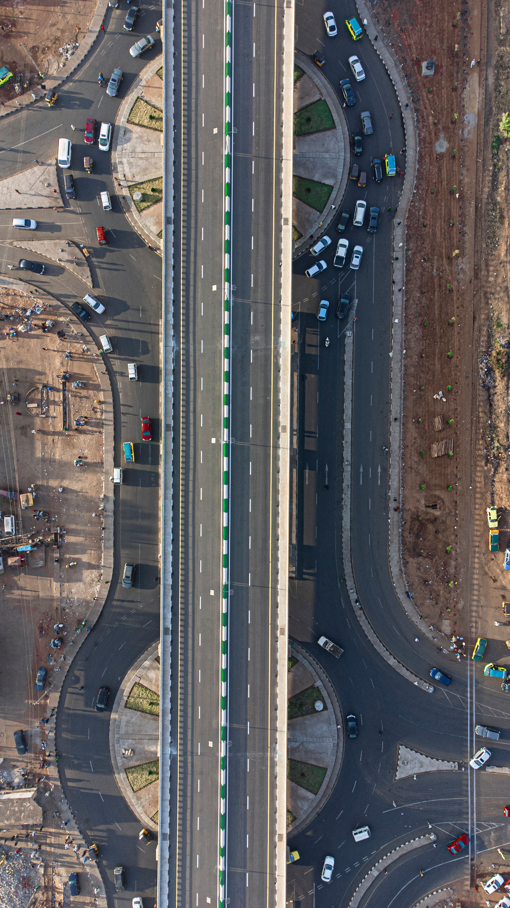
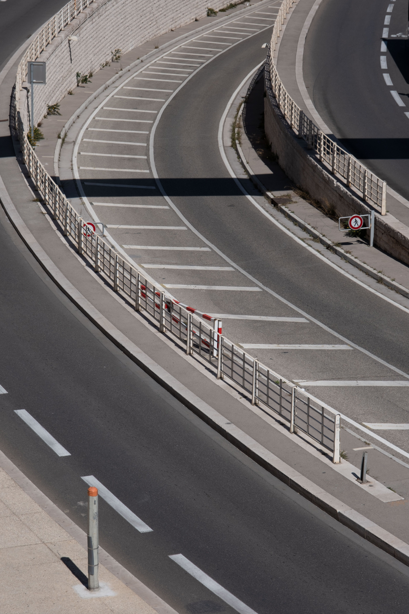

Engineering the
Scale of Tomorrow.
Infrastructure engineered for movement, resilience, and generations. Delivering ultra-span bridges, heavy transit viaducts, seismic tunnel bores, and coastal defense systems.
National Infrastructure Grid
Explore our live footprint. Select any metropolitan node on the interactive CAD network to inspect structural telemetry, concrete specifications, and engineering case studies.

Chennai Outer Ring Viaduct & Coastal Expressway
A critical multi-modal transit corridor engineered to withstand severe cyclonic tidal surge and high-tonnage freight transport along the Coromandel coastline.
Finite Element Stress Simulation
Interactive real-time 3D cantilever bridge & viaduct model. Drag to rotate the superstructure, inspect stress gradients across load points, and toggle between wireframe and FEA shaders.
Autonomous Drone Surveillance & Field Matrix
High-definition aerial feeds, thermal strain imaging, LiDAR terrain models, and 4K 60FPS surveillance across active mega-scale infrastructure assets.
Mumbai Coastal Interchange
Multi-level flyover system engineered for high-density metropolitan transit.
Godavari Steel Arch Bridge
Orthotropic steel deck engineered for extreme hydraulic scour and wind loads.
Kochi Deepwater Terminal
Anti-sulphate marine concrete structures with cathodic corrosion monitoring.
Bengaluru Metro Twin Tunnels
Precision laser-guided EPB shield tunneling beneath dense urban infrastructure.
Krishna Mega Reservoir Dam
Massive roller-compacted concrete dam with fiber-optic strain telemetry.
Delhi–NCR Rapid Transit
Ultra-HD 60 FPS corridor survey with full BIM 6D digital twin alignment.
Engineered Across Five Verticals
From extreme-span maritime crossings to subterranean mass transit, our teams combine deep mathematical modeling with cutting-edge heavy construction methodology.

DISCIPLINE 01Structural Systems & Bridges
Specialized in long-span cable-stayed, balanced cantilever, and orthotropic steel deck bridges designed for high seismic and aerodynamic resilience.
- Post-Tensioned Segmental Spans
- Aerodynamic Wind Tunnel Analysis
- Base-Isolated Elastomeric Bearings

DISCIPLINE 02Expressways & Transit Viaducts
Heavy-axle freight corridors, multi-tier interchange complexes, and automated rapid transit guideways engineered for high throughput.
- High-Modulus Polymer Asphalt
- Automated Grade Separation
- Intelligent Traffic Monitoring Hubs

DISCIPLINE 03Geotechnical & Subterranean
Twin-bore TBM tunneling, deep diaphragm cut-and-cover box structures, micro-piling, and ground improvement in challenging alluvial formations.
- Slurry & Earth Pressure Balance TBM
- 3D Ground Settlement Modeling
- Hydrophilic Gasket Sealing

DISCIPLINE 04Hydrological & Marine Defense
Deep-water container berths, offshore breakwaters, automated barrage gates, and storm surge defenses for coastal resilience.
- Anti-Sulphate Marine Concrete
- Cathodic Corrosion Monitoring
- Computational Hydrodynamic Wave CFD
Smart Urban Mobility Hubs
Intermodal transit stations integrating elevated metro lines, high-speed rail, bus terminals, and pedestrian skywalk networks.
- Multi-Level Transfer Concourse
- Pedestrian Micro-Simulation
- Net-Zero Solar Energy Canopies
 DISCIPLINE 06
DISCIPLINE 06
Robotic Precast & Heavy Erection
Automated segmental precast yards with laser-guided launching gantries capable of lifting 600-tonne concrete box girders with sub-millimeter precision.
- Automated Match-Cast Segment Pits
- Laser-Tracked Launching Gantries
- Steam-Cured High Early Strength Mix
End-to-End Infrastructure Delivery
We integrate surveying, computational modeling, robotic fabrication, and structural health monitoring into a unified digital twin platform.
Landmark Infrastructure Works
Browse key projects built across diverse geographic and geotechnical challenges.
Resilience Measured Across Centuries
We believe civil infrastructure is modern civilizations most permanent artistic and functional statement. Every joint, tendon, and pile cap is calculated to outlast political cycles and endure seismic extremes.
ISO 9001 & AASHTO
Rigorous adherence to international structural codes and non-destructive testing.
Carbon-Negative Mixes
Blast-furnace slag and fly ash replacing 40% of standard clinker cement.
0.00 LTI Safety Record
Over 18 million man-hours delivered without a lost-time incident.
Digital Twin Monitoring
Sensors embedded in concrete matrices feeding real-time strain models.

4 Decades of Structural Innovation
Pioneering balanced cantilever and maritime deep-piling methods across 19 metropolitan hubs.
Engineering Insights & Research
Peer-reviewed publications and whitepapers authored by our lead structural analysts and geotechnical directors.
Seismic Base Isolation for Long-Span Viaducts
Comparative analysis of lead-rubber bearings versus friction pendulum systems in Zone IV subduction zones.
Request Technical PDFCathodic Protection in Hyper-Saline Marine Concrete
Evaluating zinc-hydrogel sacrificial anodes in extending maritime bridge pier life beyond 120 years.
Request Technical PDFAutomated Launching Gantries in Dense Urban Corridors
Minimizing street-level traffic disruption during 450-tonne precast segmental erection on curved alignments.
Request Technical PDFInitiate a Technical Inquiry
Partner with our civil engineering consortium. Use our parametric Scope Estimator or submit your RFP documentation directly to our central tender desk.
Parametric Project Scope Estimator
Real-time computational cost, timeframe, and concrete volume projections.
Submit RFP Specification
Direct dispatch to our Lead Chief Engineer and Bid Evaluation Committee.
Tel: +91 44 2855 0920
Tel: +91 22 6620 4400